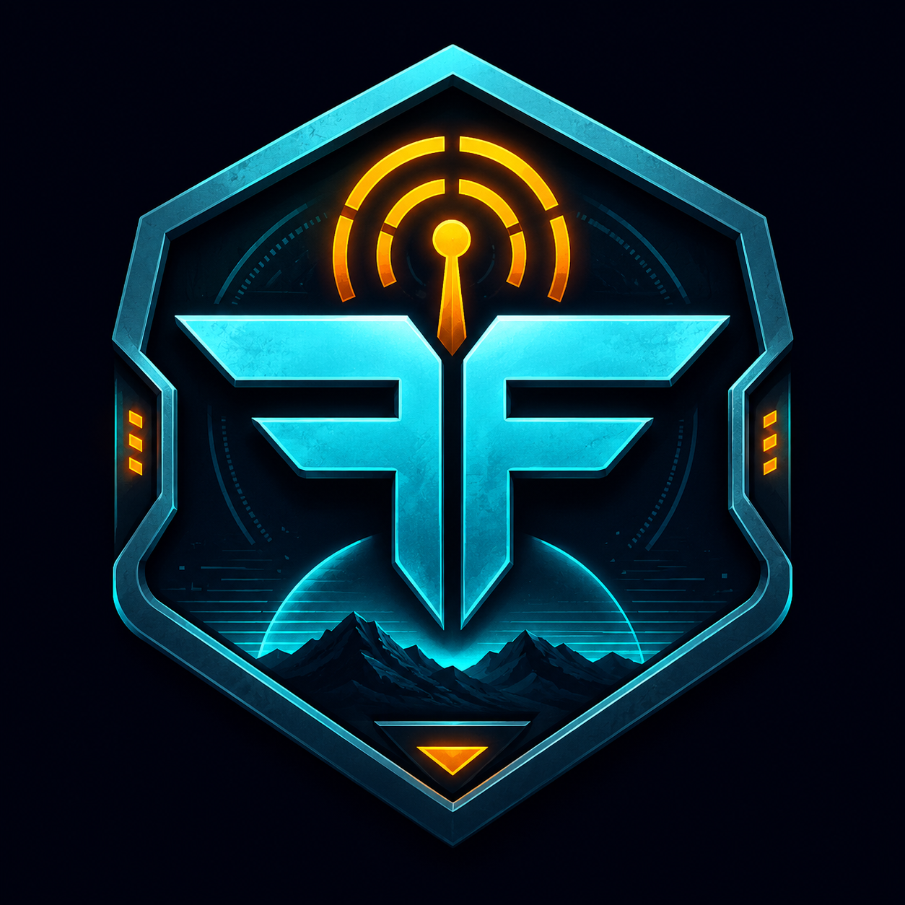
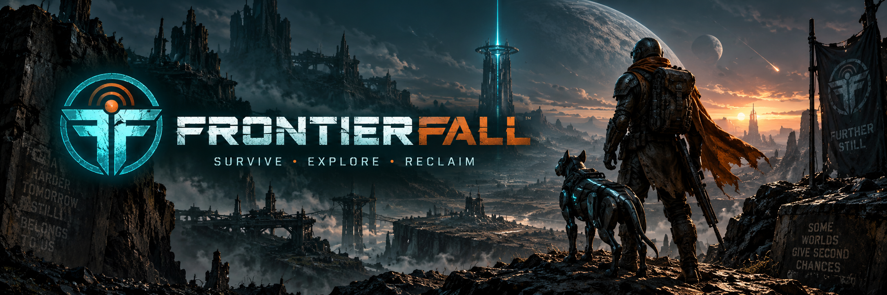
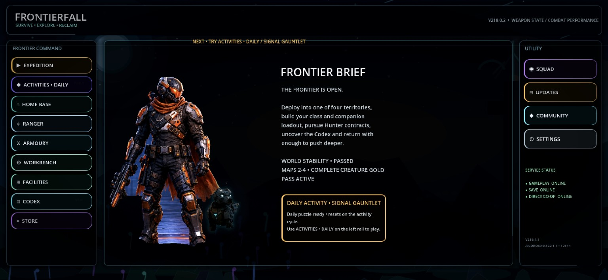
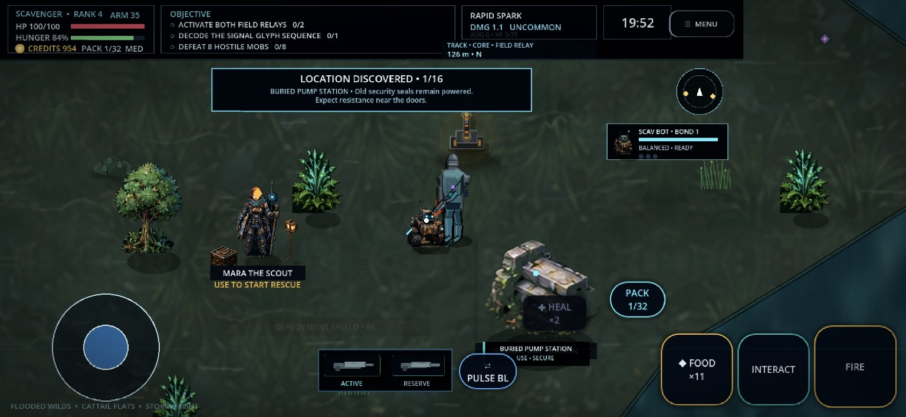
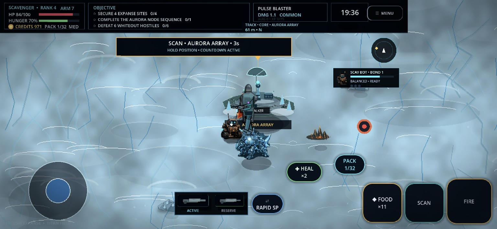
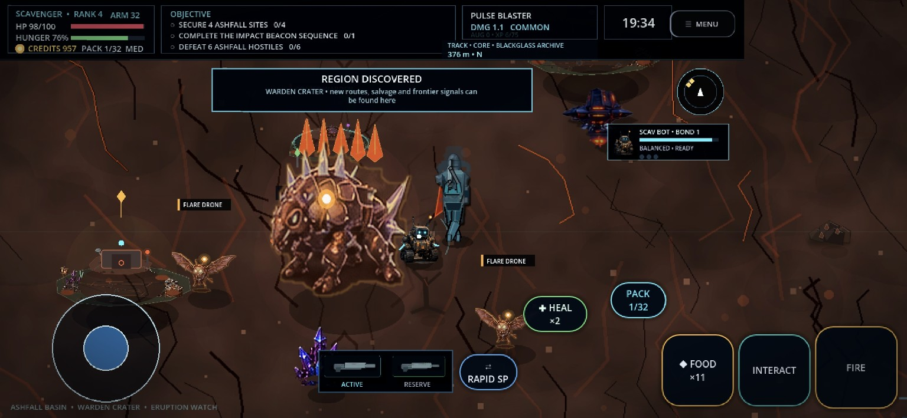
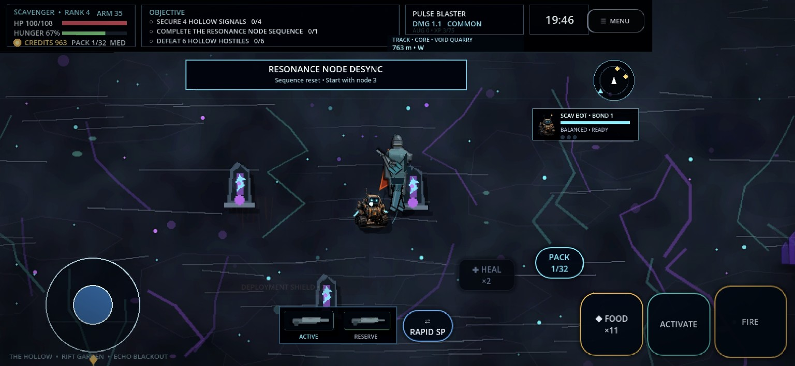
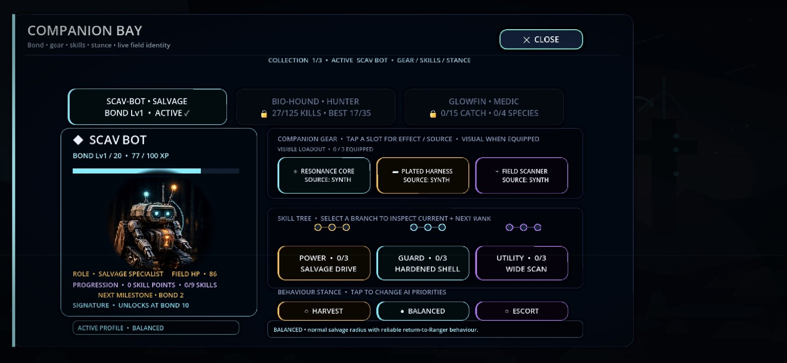
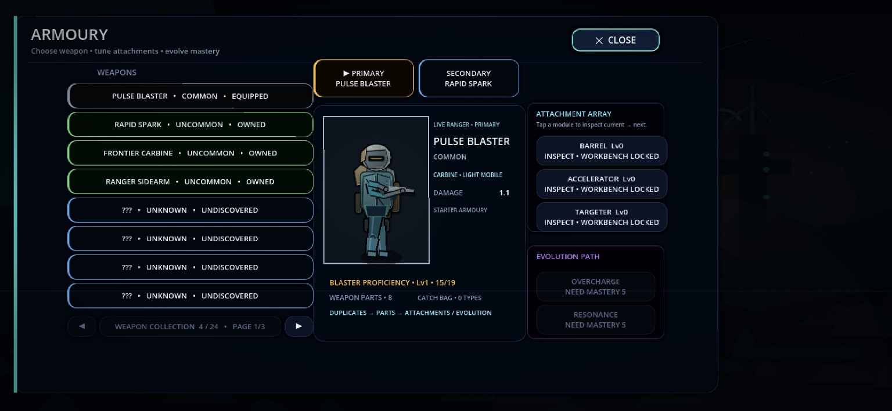
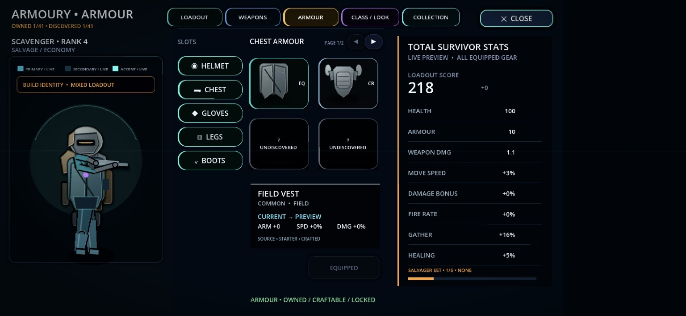

⌖
Expeditions
Enter hostile zones, tackle contracts, collect resources and hunt for a safe way out.


Enter dangerous territories, build your Ranger, gear up your companion, complete objectives and fight your way back to extraction with your haul intact.
Explore, fight, upgrade and decide when to risk one more objective versus calling extraction.
Enter hostile zones, tackle contracts, collect resources and hunt for a safe way out.
Manage weapons, armour and survivor stats through a dedicated loadout and collection system.
Bond with companions, equip their gear, shape their stance and unlock specialist skills.

The Home Base and live service structure tie together Expeditions, Activities, Home Base, Ranger progression, Armoury, Workbench, Facilities, Codex and community surfaces.

Wetlands, overgrowth and old frontier sites buried beneath a dangerous surface.

Cold visibility, pale terrain and exposed signal sites surrounded by whiteout pressure.

Scorched ground, hostile fauna and burning regions shaped by heat and instability.

Glitch-like interference zones, resonance objectives and strange frontier anomalies.
A first set of real in-game screens covering your companion systems and armoury flow.

Bond level, gear slots, skill trees and stance selection for live field identity.

Primary/secondary selection, attachments and evolution paths.

Armour slots, discovery progression and live total survivor stats.
Follow development, share feedback, report issues and find other Rangers.
Add your Google Play URL when the public store listing is ready.